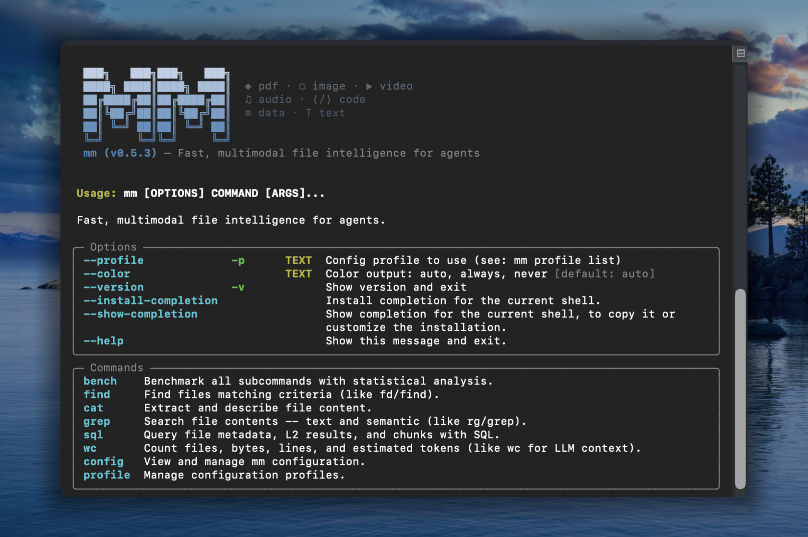

mm-ctx
Fast, multimodal context for agents



Familiar UNIX CLI tools like find, grep, cat — with multimodal powers.
mm offers both a CLI and a Python API that enable agents to work with file types that LLMs can't natively read, including images, video, audio, PDFs, and other binary formats. Rust core for speed, Python for dev-ex, UNIX philosophy for composability.
Installation
# with pip
pip install mm-ctx
# with uv
uv pip install mm-ctx
# or run directly without installing
uvx --from mm-ctx mm --help
Alternative methods
# macOS / Linux (shell installer)
curl -LsSf https://vlm-run.github.io/mm/install/install.sh | sh
# Windows (PowerShell)
irm https://vlm-run.github.io/mm/install/install.ps1 | iex
CLI
Commands that mirror familiar Unix tools but operate on multimodal semantics. Indexing is implicit — every command auto-builds a metadata index on first use.
Metadata commands (find, wc with --format json) run in ~60ms on 700 files via the Rust fast path.
Sample files
Download sample files from vlm.run to try the examples below:
mkdir mm-samples && cd mm-samples
curl -LO https://storage.googleapis.com/vlm-data-public-prod/hub/examples/image.caption/bench.jpg
curl -LO https://storage.googleapis.com/vlm-data-public-prod/hub/examples/document.invoice/wordpress-pdf-invoice-plugin-sample.pdf
curl -LO https://storage.googleapis.com/vlm-data-public-prod/hub/examples/video/Timelapse.mp4
curl -LO https://storage.googleapis.com/vlm-data-public-prod/hub/examples/mixed-files/mp3_44100Hz_320kbps_stereo.mp3
Multimodal directory
With all 4 files downloaded, mm treats the folder as a multimodal workspace:
$ mm find mm-samples/ --tree
mm-samples (4 files, 3.5 MB)
├── Timelapse.mp4 [3.0 MB]
├── bench.jpg [253.8 KB]
├── mp3_44100Hz_320kbps_stereo.mp3 [286.0 KB]
└── wordpress-pdf-invoice-plugin-sample.pdf [42.6 KB]
$ mm wc mm-samples/ --by-kind
kind files size lines (est.) tokens (est.) tok_per_mb
audio 1 286.0 KB 0 85 304
document 1 42.6 KB 29 176 4.2K
image 1 253.8 KB 0 425 1.7K
video 1 3.0 MB 0 85 29
—————
total 4 3.5 MB 29 771 218
$ mm find mm-samples/ --columns name,kind,size,ext
name kind size ext
bench.jpg image 259865 .jpg
Timelapse.mp4 video 3113073 .mp4
mp3_44100Hz_320kbps_stereo.mp3 audio 292853 .mp3
wordpress-pdf-invoice-plugin-sample.pdf document 43627 .pdf
$ mm cat mm-samples/wordpress-pdf-invoice-plugin-sample.pdf -n 10
wordpress-pdf-invoice-plugin-sample.pdf — pages 1-1 of 1:
--- Page 1 ---
INVOICE
Sliced Invoices
Suite 5a-1204 123 Somewhere Street
Your City AZ 12345
admin@slicedinvoices.com
Invoice Number: INV-3337
Invoice Date: January 25, 2016
Due Date: January 31, 2016
Total Due: $93.50
0.8s • 42.6 KB • 53.2 KB/s
$ mm cat mm-samples/bench.jpg -m accurate
<description>
This outdoor daytime photograph captures a peaceful park scene on a sunny day. The primary focus is a modern dark gray metal slat bench positioned in the foreground on a patch of green grass. The bench is set upon a small concrete pad, and its curved backrest and armrests create a sleek, contemporary silhouette. Behind the bench, a paved walkway cuts through a well-maintained lawn.
</description>
Tags: park, bench, outdoors, summer, grass, trees, street, urban, leisure, sunlight
Objects: metal bench, tree, car, white SUV, red car, concrete pad, walkway, grass, street, building
$ mm grep "invoice" mm-samples/
wordpress-pdf-invoice-plugin-sample.pdf
2 Payment is due within 30 days from date of invoice. Late payment is subject to fees of 5% per month.
3 Thanks for choosing DEMO - Sliced Invoices | admin@slicedinvoices.com
10 admin@slicedinvoices.com
Quick start
mm --version # print version
mm find mm-samples/ --tree --depth 1 # directory overview with sizes
mm wc mm-samples/ --by-kind # file/byte/token counts by kind
# mm peek: raw file metadata (dimensions / EXIF / codec / mime / hash).
mm peek bench.jpg # image dimensions, EXIF, hash
mm peek Timelapse.mp4 # video resolution, duration, codecs
mm peek wordpress-pdf-invoice-plugin-sample.pdf # mime, content hash
mm peek bench.jpg Timelapse.mp4 --format json # multi-file JSON
# mm cat: content extraction. Default --mode fast.
mm cat wordpress-pdf-invoice-plugin-sample.pdf # PDF page-text via pypdfium2 (fast pipeline)
mm cat src/main.py # passthrough text + chunk + embed (kind=text)
mm cat notes.docx # python-docx text
mm cat bench.jpg # short VLM caption (fast pipeline)
mm cat wordpress-pdf-invoice-plugin-sample.pdf -n 20 # first 20 lines
# --mode accurate: full LLM pipeline for image/video/audio/PDF (requires a configured profile)
mm cat bench.jpg -m accurate # LLM caption + tags + objects
mm cat Timelapse.mp4 -m accurate # keyframe mosaic → LLM description
mm cat mp3_44100Hz_320kbps_stereo.mp3 -m accurate # Whisper transcript → LLM summary
mm cat wordpress-pdf-invoice-plugin-sample.pdf -m accurate # LLM-structured invoice
Python API
mm is also a library. mm.Context is the one class you need to build a multimodal prompt incrementally, then hand the whole thing to a VLM. Backed by a Rust core: O(1) insert/lookup, sub-millisecond render at 10K items.
The public namespace is intentionally tiny:
import mm
mm.Context # the one class you use
mm.Ref # Annotated[str, "mm.Ref"] typed alias for ref ids
mm.RefNotFoundError # KeyError subclass raised by ctx.get on miss
mm.uuid7() # UUIDv7 helper (time-ordered default session_id)
Build a prompt
import mm
from pathlib import Path
from PIL import Image
ctx = mm.Context(session_id=mm.uuid7()) # or omit; auto-mints a UUIDv7
img: mm.Ref = ctx.put(Path("photo.jpg"))
img2: mm.Ref = ctx.put(Image.open("x.png"),
metadata={"note": "product hero shot"})
doc: mm.Ref = ctx.put(Path("paper.pdf"),
metadata={"summary": "Attention is all you need",
"tags": ["nlp", "transformer"]})
vid: mm.Ref = ctx.put(Path("clip.mp4"),
metadata={"scene": 3, "actor": "A"})
ctx.put(obj, *, metadata=...) accepts a pathlib.Path, a str (file path or http(s):// URL), bytes, or a PIL.Image.Image. metadata is a single free-form JSON-serialisable dict — note / summary / tags are conventional keys used by rendering surfaces; anything else flows through to the VLM as a leading text block per item. Every put returns a short kind-prefixed ref id like img_a1b2c3, typed as mm.Ref.
Emit VLM-ready messages (OpenAI / Gemini)
from openai.types.chat import ChatCompletionMessageParam
from google.genai import types as genai_types
messages_openai: list[ChatCompletionMessageParam] = ctx.to_messages(format="openai")
messages_gemini: list[genai_types.ContentDict] = ctx.to_messages(format="gemini")
Drop messages_openai directly into client.chat.completions.create(messages=...), or messages_gemini into model.generate_content(contents=...). Per-kind encoder overrides:
messages: list[ChatCompletionMessageParam] = ctx.to_messages(
format="openai",
encoders={"image": "tile", "video": "mosaic"},
)
Unspecified kinds fall back to sensible defaults (image-resize, video-frame-sample, document-rasterize).
Round-trip and resolve
obj: Path | Image.Image | bytes | str = ctx.get(img) # instance: returns the stored object
row: dict | None = mm.Context.get(f"{ctx.session_id}/{img}") # classmethod: cross-session DB lookup
Instance ctx.get(ref) returns the exact Python object you put — identity is preserved for in-memory items (no copy, no rehydrate). Classmethod mm.Context.get("<session>/<ref>") resolves against the global ~/.local/share/mm/mm.db when you only have a ref string and no live Context.
Missed a ref? ctx.get("img_a1b2cZ") raises mm.RefNotFoundError (a KeyError subclass) with a Levenshtein-based "did you mean" and the full context table inline — agent-friendly by default.
Render
ctx.print_tree() # insertion-order tree with metadata
print(ctx.to_md(mode="metadata")) # markdown: ref | kind | source | content
print(repr(ctx)) # markdown summary: ref | kind | source
Context(session=019da4…, items=4)
├── [1] img_a1b2c3 image /abs/path/photo.jpg
├── [2] img_9f0e12 image PIL.Image(RGB, 1024×768)
│ └─ note: "product hero shot"
├── [3] doc_d4e5f6 document /abs/path/paper.pdf
│ ├─ summary: "Attention is all you need"
│ └─ tags: [nlp, transformer]
└── [4] vid_7890ab video /abs/path/clip.mp4
├─ scene: 3
└─ actor: "A"
Context("~/data") continues to support the directory-scan surface (to_polars, to_pandas, to_arrow, sql, show, info). See docs/api.md for the full spec — print_tree layouts, cross-session resolution, and the deferred save() API.
Integrations
Claude Code
Install the mm-cli-skill via the skill marketplace:
claude
> /plugin marketplace add vlm-run/skills
> /plugin install mm-cli-skill@vlm-run/skills
> Organize my ~/Downloads folder using mm
npx skills
Install mm-cli-skill globally so any CLI assistant or agentic tool can discover it:
npx skills add vlm-run/skills@mm-cli-skill
Universal assistants (OpenClaw, NemoClaw, OpenCode, Codex, Gemini CLI)
Install the mm-cli-skill globally first, then start your preferred tool:
# One-time setup
npx skills add vlm-run/skills@mm-cli-skill
# Then use any CLI assistant — it will discover mm automatically
openclaw "Organize my ~/Downloads folder using mm"
codex "Find all PDFs in ~/docs and summarize them with mm"
The skill exposes mm's capabilities to any tool that supports the skills protocol.
Command reference
| Command | Purpose | Key flags |
|---|---|---|
find |
Find/list files, tree view, schema | --name, -i (ignore case), --kind, --ext, --min-size, --max-size, --sort, --reverse, --columns, --tree, --depth, --schema, --limit, --no-ignore, --format |
peek |
Raw file metadata (dimensions / EXIF / codec / mime / hash). | --format (rich / json / pretty-json / tsv / csv) |
cat |
Content extraction (auto-detected by file type × mode) | --mode fast/accurate (default fast), -p (pipeline), -n, --no-cache, -v, --encode.* (incl. --encode.strategy_opts KEY=VALUE), --generate.*, --list-pipelines, --list-encoders, --print-pipeline <kind>/<mode>, --format |
grep |
Content search across files | --kind, --ext, -C, --count, -i, --semantic, --pre-index, --no-ignore, --format |
sql |
SQL queries on file index, results, chunks, and embeddings | --dir, --pre-index, --format, --list-tables |
wc |
Count files, size, lines (est.), tokens (est.) | --kind, --by-kind, --format |
bench |
Benchmark suite | --rounds, --warmup, --mode, --format |
config |
Extraction mode settings | show, init, set, reset-db, reset-profiles, reset |
profile |
Manage LLM provider profiles | list, add, update, use, remove, --format |
find — locate/list, tree, and schema
mm find ~/data --kind image # all images
mm find ~/data --kind video --sort size --reverse # videos by size
mm find ~/data --ext .pdf --min-size 10mb # large PDFs
mm find ~/data --kind image --limit 5 --format json # JSON output
mm find ~/data --name "test_.*\.py" # regex name match
mm find ~/data -n config # substring name match
mm find ~/data -n CONFIG -i # case-insensitive (-i)
mm find ~/data --sort size --reverse --limit 20 # tabular listing
mm find ~/data --kind document --columns name,size,ext
mm find ~/data --tree --depth 2 # hierarchical tree view
mm find ~/data --tree --kind video # tree filtered to videos
mm find ~/data --schema # column names, types, descriptions
mm find ~/data --format json # full metadata JSON
mm find ~/data --no-ignore # include gitignored files
peek — raw file metadata
mm peek returns locally-extracted metadata (dimensions / EXIF / codec / duration / mime / hash …).
mm peek bench.jpg # image dims / EXIF / hash (Rich panel)
mm peek Timelapse.mp4 # video resolution, duration, codecs
mm peek wordpress-pdf-invoice-plugin-sample.pdf # mime, content hash
mm peek bench.jpg Timelapse.mp4 --format json # multi-file JSON
mm peek bench.jpg --format tsv # flat TSV (every kind has the same column set)
cat — content extraction
--mode is one of fast (default) or accurate. Mode is a no-op for kind=text and non-PDF documents (.docx / .pptx): they always return passthrough text.
mm cat wordpress-pdf-invoice-plugin-sample.pdf # PDF page-text via pypdfium2 (fast pipeline)
mm cat wordpress-pdf-invoice-plugin-sample.pdf -n 20 # first 20 lines (head)
mm cat src/main.py # passthrough text
mm cat notes.docx # python-docx tex
mm cat bench.jpg # short VLM caption (fast pipeline)
mm cat bench.jpg -m accurate # full LLM caption + tags + objects
mm cat Timelapse.mp4 -m accurate # mosaic → LLM description
mm cat bench.jpg -p resize # use named encoder
mm cat bench.jpg -m accurate -p my-pipeline.yaml # custom pipeline YAML
mm cat Timelapse.mp4 -m accurate --no-cache # force fresh LLM call
mm cat bench.jpg -m accurate -v # verbose (shows pipeline tree)
mm cat --list-pipelines # list registered pipelines
mm cat --list-encoders # list registered encoders
mm cat --print-pipeline image/accurate # print a built-in pipeline's YAML source
mm cat bench.jpg -m accurate --encode.strategy_opts max_width=768 # override a single strategy_opts entry
Override surfaces
mm cat resolves each LLM call from three layers, with right-most wins on conflict:
| Layer | Configures | How to set |
|---|---|---|
Profile (mm.toml) |
base_url, api_key, default model |
mm profile add <name> --base-url ... --model ...; selected per-invocation with mm --profile <name> <subcommand> ... |
Pipeline YAML (generate: block) |
model, prompt, max_tokens, temperature, json_mode, extra_body (deep-merged) |
Built-in pipelines under python/mm/pipelines/ or custom YAMLs passed via mm cat -p path.yaml |
CLI flags on cat |
per-field overrides | See table below |
CLI override flags (each takes precedence over both pipeline YAML and profile):
| Flag | Alias | Pipeline field |
|---|---|---|
--model NAME |
--generate.model NAME |
generate.model |
--prompt TEXT |
--generate.prompt TEXT |
generate.prompt |
--generate.max-tokens N |
— | generate.max_tokens |
--generate.temperature F |
— | generate.temperature |
--generate.json-mode BOOL |
— | generate.json_mode |
--generate.extra-body '<json>' |
— | generate.extra_body (deep-merged onto YAML; CLI keys win) |
Use --generate.extra-body for any provider-specific knobs (vlmrt's method, method_params, video_fps, image_resolution, vlmrun.metadata, etc.). The merged model + extra_body participate in the L2 cache key, so changing a knob correctly invalidates cached results. base_url and api_key are profile-only — there is no CLI override for them.
Examples against a vlmrt deployment (mm profile add vlmrt --base-url http://gpu-box:8001/v1 --model qwen3.5-0.8b):
# Florence-2 — document OCR (skip server-side LLM refinement)
mm --profile vlmrt cat page.png -m accurate \
--model florence-2-base-ft \
--generate.extra-body '{"method":"ocr","refine_with_llm":false}'
# Florence-2 — detailed caption
mm --profile vlmrt cat photo.jpg -m accurate \
--model florence-2-base-ft \
--generate.extra-body '{"method":"detailed_caption"}'
# Qwen3.5-0.8B — free-form VQA on an image with a custom prompt
mm --profile vlmrt cat photo.jpg -m accurate \
--model qwen3.5-0.8b \
--prompt "What objects are visible? Reply as a comma-separated list."
# Qwen3.5-0.8B — video summarisation with explicit frame sampling
mm --profile vlmrt cat clip.mp4 -m accurate \
--model qwen3.5-0.8b \
--generate.extra-body '{"video_fps":1.0,"video_max_frames":8,"video_resolution":"448x336"}'
# PaddleOCR-v5 — full detect + recognise (English, default threshold)
mm --profile vlmrt cat storefront.jpg -m accurate \
--model paddleocr-v5 \
--generate.extra-body '{"method":"ocr"}'
# PaddleOCR-v5 — Chinese OCR with a tighter score threshold
mm --profile vlmrt cat storefront.jpg -m accurate \
--model paddleocr-v5 \
--generate.extra-body '{"method":"ocr","method_params":{"lang":"ch","score_threshold":0.6}}'
# Moondream2 — multi-object detection
mm --profile vlmrt cat photo.jpg -m accurate \
--model moondream2 \
--generate.extra-body '{"method":"detect","method_params":{"object":"fish"}}'
wc — count files, size, tokens
mm wc ~/data --by-kind
mm wc ~/data --by-kind --format json
grep — content search
mm grep "attention" ~/data --kind document
mm grep "TODO" ~/data --kind code
mm grep "invoice" ~/data --count # match counts per file
mm grep "Quantum Phase" ~/data -i # case-insensitive search
mm grep "secret" ~/data --no-ignore # search gitignored files
mm grep "revenue forecast" ~/data -s # semantic (vector) search
mm grep "architecture" ~/data -s --pre-index # auto-index before search
sql — query the index
Queries file metadata via scan + SQLite, or results and chunks from the persistent SQLite store.
mm find ~/data --schema # see available columns
mm sql "SELECT kind, COUNT(*) as n, ROUND(SUM(size)/1e6,1) as mb \
FROM files GROUP BY kind ORDER BY mb DESC" --dir ~/data
# Query stored tables directly (auto-detected from table name)
mm sql "SELECT file_uri, summary FROM extractions LIMIT 10"
mm sql "SELECT file_uri, chunk_idx, LENGTH(chunk_text) FROM chunks"
mm sql "SELECT * FROM files WHERE kind='image'" --dir ~/data --pre-index # index before query
mm sql --list-tables # show available tables
Output modes
- TTY: Rich formatted tables/panels
- Piped: plain TSV/text (machine-readable, no ANSI)
**--format json**: JSON output on any command that supports it**--format csv**: Comma-separated values**--format dataset-jsonl**: JSONL for dataset export**--format dataset-hf**: HuggingFace Datasets format (requires--output-dir)
Verbose mode (--verbose / -v)
mm cat <file> [OPTIONS] --verbose shows the pipeline execution tree after content:
pipeline
├─ encode: resize · 0.0s → 1 parts (1 image)
└─ generate: ollama · 2.3s · 354→195 tokens
Processing tiers
mm separates what by command and how much LLM by mode. mm peek surfaces local file metadata; mm cat extracts content and accepts --mode fast|accurate (default fast).
| Tier | Command | What | LLM? |
|---|---|---|---|
| metadata | mm peek |
image dims/EXIF/hash, video resolution/duration/codec, audio codec, mime, magika | never |
| fast (default) | mm cat -m fast |
Output of the kind's fast pipeline |
maybe¹ |
| accurate | mm cat -m accurate |
Output of the kind's accurate pipeline |
yes |
¹ Per-kind fast pipelines: image/video include a short LLM caption stage;
audio/document/code do not. See pipelines/{kind}/fast.yaml.
Metadata-tier extraction (used by find, wc, the cat default, and as the
input for fast/accurate pipelines) is Rust-native (~60ms / 700 files).
Performance
Benchmarked on Apple Silicon (M-series), 702 files (7.2GB):
| Operation | Latency |
|---|---|
| Metadata scan (702 files) | 8ms |
CLI cold start (find --format json) |
60ms |
CLI cold start (find --schema --format json) |
109ms |
CLI cold start (sql) |
300ms |
| Fast code extraction | ~52ms |
| Fast image extraction | ~61ms |
| Fast PDF text extraction | ~220ms |
| Fast video metadata | <100ms |
| PDF page mosaic (per page) | ~10ms |
| Video keyframe mosaic (48 frames) | ~1s |
Storage
mm uses a global SQLite database at ~/.local/share/mm/mm.db with sqlite-vec for vector search:
| Table | Contents | Relationship |
|---|---|---|
files |
File metadata + content (one row per file, uri = absolute path) |
— |
extractions |
LLM-generated summaries (many per file) | FK → files.uri |
chunks |
~2048-char content chunks (mode = 'fast' or 'accurate') | FK → extractions.id |
chunks_vec |
Embedding vectors (sqlite-vec virtual table) | FK → chunks.id |
cache |
Key-value result cache | — |
The files table includes metadata columns (path, size, kind, etc.) and content columns (content_hash, text_preview, line_count, duration_s, exif_*, video_codec, etc.).
Use mm config reset-db to clear all databases and caches.
Pipelines — encode + generate
Pipelines are YAML configs under pipelines/{kind}/{mode}.yaml that pair an encoder with optional LLM generation parameters. When generate is null, the pipeline is encode-only (no LLM call). Encoders are Python classes under encoders/ that convert media files into VLM-ready Messages. See [docs/PIPELINES.md](docs/PIPELINES.md) and [docs/ENCODERS.md](docs/ENCODERS.md) for the full pipeline and encoder reference.
Pipeline fields can be overridden from the CLI:
mm cat photo.jpg -m accurate --encode.strategy tile --generate.max-tokens 1024
mm cat photo.jpg -m accurate --generate.temperature 0.5
# Override individual strategy_opts entries (repeatable KEY=VALUE form;
# values are coerced to int/float/bool when possible).
mm cat photo.jpg -m accurate --encode.strategy_opts max_width=768
mm cat video.mp4 -m accurate --encode.strategy_opts max_width=768 --encode.strategy_opts fps=5
# Print a built-in pipeline's YAML as a starting point for your own.
mm cat --print-pipeline image/accurate
Load explicit pipeline YAML(s) with -p (repeatable, dispatched by kind field):
mm cat photo.jpg -p my-image-pipeline.yaml
mm cat *.jpg *.mp4 -p image-pipeline.yaml -p video-pipeline.yaml
mm cat photo.jpg -p ~/custom.yaml --generate.max-tokens 512
Custom pipeline paths can also be set in ~/.config/mm/mm.toml:
[pipelines]
image.fast = "/path/to/my-image-fast.yaml"
video.accurate = "/path/to/my-video-accurate.yaml"
LLM Configuration using Profiles
For accurate mode, mm uses the openai Python SDK to call any OpenAI-compatible API. Provider settings are managed through profiles — named configurations stored in ~/.config/mm/mm.toml.
Quick setup
mm config init # create config with default profile (local Ollama)
mm config show # show resolved config with sources
Managing profiles
Each profile stores base_url, api_key, and model. You can have as many as you need — one per provider, one per use-case, etc.
# Add custom profiles
mm profile add openai --base-url https://api.openai.com/v1 --api-key sk-... --model gpt-4o
mm profile add openrouter --base-url https://openrouter.ai/api/v1 --model qwen/qwen3.5-27b
# Update reserved profiles (ollama, gemini, vlmrun)
mm profile update ollama --base-url http://localhost:11434 --model qwen3.5:9B
# List all profiles (● = active)
mm profile list
# Switch the active profile
mm profile use openai
# Update a field on an existing profile
mm profile update openai --model gpt-4o-mini --api-key sk-new-key
# Remove a profile (cannot remove the active one)
mm profile remove openai
Selecting a profile per-command
# --profile flag (one-off override, does not change active profile)
mm --profile openai cat photo.png -m accurate
# Environment variable
MM_PROFILE=openai mm cat photo.png -m accurate
Resolution order
Provider settings (base_url, api_key, model) come from the active profile, falling back to built-in defaults.
The active profile is resolved as:
--profile flag > MM_PROFILE env > active_profile in config file > "ollama"
Config file format
# ~/.config/mm/mm.toml
active_profile = "ollama"
[profile.ollama]
base_url = "http://localhost:11434"
api_key = ""
model = "qwen3.5:0.8"
[profile.gemini]
base_url = "https://openrouter.ai/api/v1"
api_key = "<OPENROUTER_API_KEY>"
model = "google/gemini-2.5-flash-lite"
[profile.vlmrun]
base_url = "https://api.vlm.run/v1/openai"
api_key = "<VLMRUN_API_KEY>"
model = "Qwen/Qwen3.5-0.8B"
License
MIT